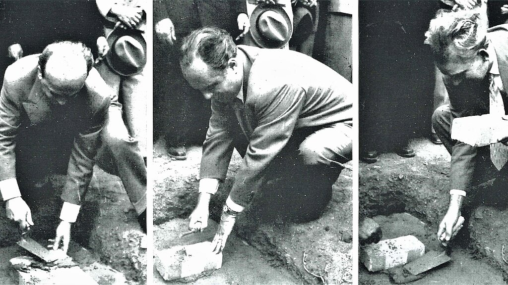
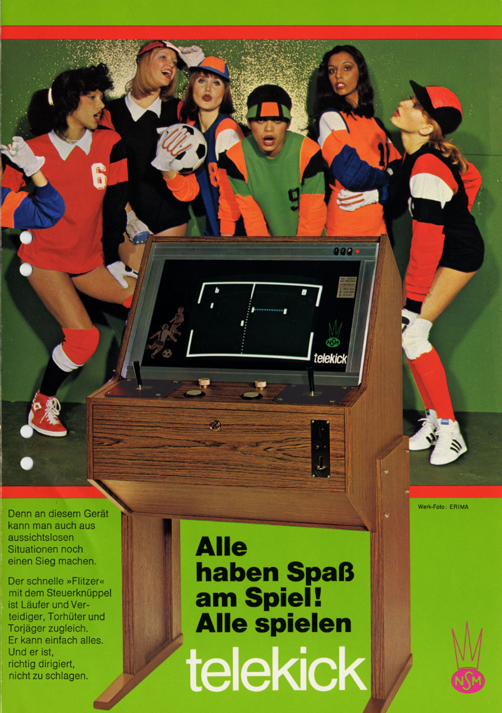
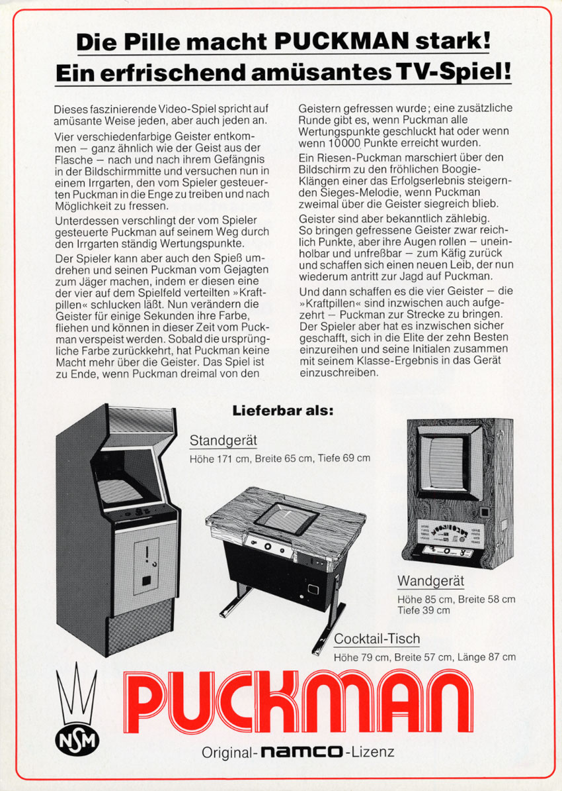
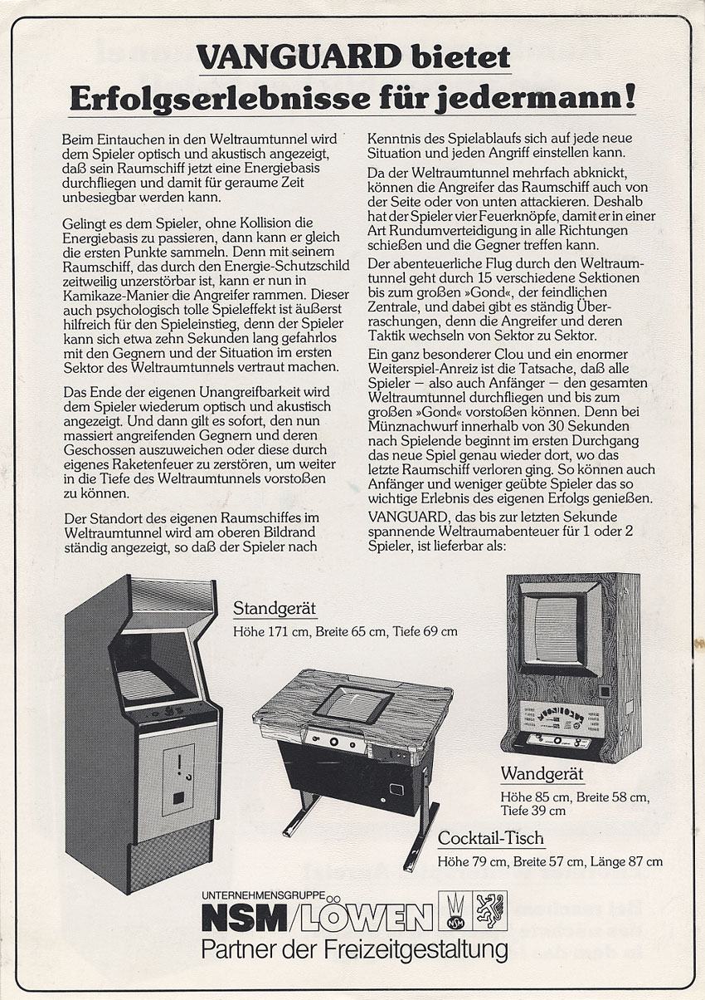
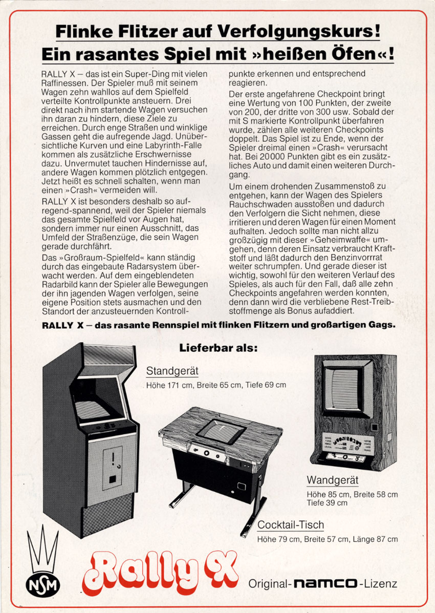
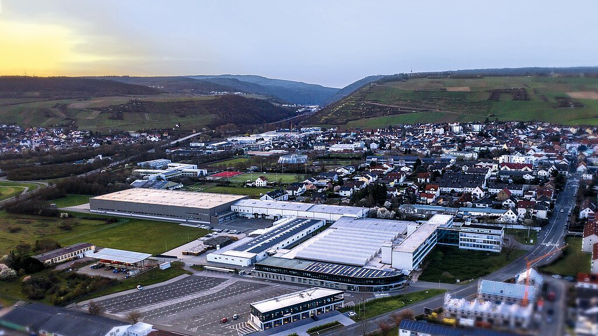

A Name That Hides Two Companies
The easiest way to misunderstand NSM-Löwen is to begin with the name “NSM-Löwen” and project it backward.
The company did not begin under that name in 1949. The lineage started with LÖWEN Automatendienste, a sales and distribution business established in Braunschweig on July 1, 1949. NSM Apparatebau followed as a sister manufacturing company on October 2, 1952. For decades the two businesses worked in complementary roles: LÖWEN was associated strongly with sales, distribution and operator relationships, while NSM Apparatebau handled manufacturing, engineering and technical support.
That division is not merely a corporate-history detail. It explains why the arcade record can look inconsistent when read casually. A game may survive on a German LÖWEN sales flyer but have an NSM service manual. Another may carry NSM hardware while its licensing announcement names NSM/Löwen as a combined commercial entity. The paper trail becomes much easier to understand once the two-company structure is kept in view.
The founder story is also more complicated than later anniversary summaries sometimes suggest. A detailed company history published in 2019 describes Gerhard W. Schulze as registering LÖWEN Automatendienste in 1949, with Herbert Nack joining later that year. Schulze and Nack then met inventor Wilhelm Menke at a Frankfurt trade fair in September 1951. The three men went on to establish NSM Apparatebau in 1952. Later corporate histories sometimes compress that chronology and describe Schulze, Nack and Menke together as the founders of LÖWEN in 1949. The surviving evidence supports distinguishing the 1949 sales-company formation from the 1952 manufacturing-company formation rather than force both events into one neat origin story.
NSM itself reflected the surnames Nack, Schulze and Menke.
From Braunschweig To Bingen

The early company was built around coin-operated entertainment long before video games became part of the business. Jukeboxes, amusement machines and gambling-oriented equipment gave NSM and LÖWEN experience with the parts of the arcade business that software-only histories tend to ignore: cabinet construction, coin handling, service access, electrical design, operator maintenance, pricing configuration and nationwide sales support.
The company’s future home in Bingen am Rhein began taking shape in the mid-1950s. The foundation stone for the new plant was laid on September 5, 1954. A topping-out ceremony followed in June 1955, and the official relocation to Bingen took effect on July 1, 1956. The Bingen operation expanded repeatedly afterward and became the physical center of the company’s manufacturing and service organization.
That infrastructure mattered when video games arrived. NSM did not have to invent an operator network, a service department or a cabinet factory from scratch. It already knew how to turn a coin-operated product into something German operators could install, price, maintain and repair.
An Engineering Company Before It Was A Videogame Company
The Bingen plant also helps explain why NSM’s role in video games developed the way it did.
NSM’s engineering culture was not organized around software as the sole product. The company built complete coin-operated systems. That meant mechanical assemblies, cabinetry, electrical systems, coin handling, service access and operator maintenance were all normal parts of product development.
Wilhelm Menke’s role is important in that context. The company’s historical accounts present him as an inventor and technical figure rather than merely a business founder. Later patent activity tied to NSM and Menke shows that the organization continued to think in terms of complete gaming-machine systems long after the first video boom.
That engineering continuity matters because it makes the later arcade adaptations less surprising. A company accustomed to redesigning coin-operated hardware for operators would naturally treat a videogame board as one component inside a larger commercial machine.
The same mindset appears decades later in NSM’s universal video hardware. The 1990 DUO play system was built around interchangeable game systems, service controls, coin processing and screen management. The software could change; the operator-facing machine remained the company’s engineering problem.
Seen from that perspective, Telekick, Puckman wall cabinets, Rally-X, Top Game and DUO play are not isolated curiosities. They are different expressions of the same long-standing NSM habit: design the complete machine around the needs of the operator.
Atari Arrives: Löwen Enters Video Before Telekick
NSM’s own Telekick of 1974 once looked like a natural starting point for the company’s video-game story. The record pushes that starting point back at least one year.
Atari International was established in 1973, and LÖWEN Automaten was among Atari’s early overseas distribution partners, responsible for West Germany and West Berlin. German LÖWEN advertising survives for Atari products from that earliest period, including Pong Doubles in 1973. Other early Atari titles linked to LÖWEN through German advertising and distributor records include Space Race, Rebound, World Cup Football, Gran Trak 10, Steeplechase and later a much broader range of Atari coin-op products.
That relationship was already producing unusual European presentation hardware by 1976. At the IMA trade fair in West Berlin, LÖWEN-Automaten presented Atari Europe’s Theatre Kiosk, a modular system that could be configured for different locations and multiple games. Atari’s own material described game replacement through changes to the control panel, score glass and computer. The Kiosk was Atari Europe technology rather than an NSM-developed machine, but its appearance in the LÖWEN booth is an early sign that the German distributor was already working with flexible, location-specific video installations years before NSM’s later wall and table cabinets.
This was not a brief experiment. The LÖWEN-Atari relationship continued through the 1970s. Atari recognized LÖWEN with a “platinum Breakout” award in 1977 for its sales performance in West Germany and West Berlin. Contemporary trade coverage described LÖWEN as the distributing arm for NSM while reporting on the award.
By the end of the decade, LÖWEN’s German Atari portfolio included products such as Breakout, Canyon Bomber, Dominos, Destroyer, Super Bug, Pool Shark, Tournament Table, Super Breakout, Lunar Lander and Asteroids. In 1980 LÖWEN was still presenting Atari products at the Frankfurt IMA, including an Asteroids cocktail-table version and Atari Soccer.
The relationship was close enough that an unreleased Atari Mini-Golf prototype reportedly appeared at an NSM/LÖWEN in-house customer exhibition in Frankfurt in early 1979. Mini-Golf does not belong in the NSM release count, but its presence is revealing: LÖWEN had access to Atari hardware that never became a normal commercial release.
A Distributor Relationship With Depth
The Atari connection is important not just because it adds titles to the census, but because it shows how early LÖWEN became embedded in the international videogame business.
Atari needed overseas partners that understood local operators, currencies, regulation, service expectations and sales channels. LÖWEN already possessed those relationships through its broader coin-op business. For Atari, that made the German company more useful than a simple importer. For LÖWEN, Atari supplied a stream of increasingly sophisticated video products at exactly the moment the amusement trade was changing.
The surviving German advertising traces that relationship across several technological generations. It begins with the spare, black-and-white sports games of the Pong era, moves through early driving and action games, then reaches the microprocessor-based hits of the late 1970s and early 1980s.
The 1977 platinum Breakout award is particularly revealing. Atari did not give it merely for having a contract on paper. Contemporary coverage ties the award to LÖWEN’s sales performance in West Germany and West Berlin. By then the relationship had matured into a meaningful commercial channel.
The 1979 appearance of Atari’s unreleased Mini-Golf prototype at an NSM/LÖWEN customer event adds another layer. Even though Mini-Golf never became a normal release and must stay outside the title count, its presence suggests that LÖWEN was close enough to Atari’s European operation to show experimental hardware to customers.
That proximity matters when later NSM cabinet adaptations are considered. By the time Puckman, Rally-X and Vanguard appeared in German-specific forms, the organization had already spent years learning how international videogames behaved in the local operator market.
The Atari relationship was therefore more than the first chapter of the catalog. It was part of the institutional learning that made the later localization model possible.
Telekick: NSM’s Own 1974 Video Game

Against that background, Telekick becomes more interesting, not less.
Telekick, released in 1974, is the strongest confirmed example of an original NSM-developed and NSM-published commercial video game. Surviving German promotional material presents it as a four-player soccer-style television game in the Pong tradition.
The flyer describes a fast on-screen player controlled by the joystick who can act as runner, defender, goalkeeper and goal-scorer. The sales language emphasizes quick reactions and the possibility of turning an apparently hopeless situation into a win. It is unmistakably a product being sold as NSM’s own machine rather than a foreign title merely passing through the German distribution network.
That makes Telekick the first known point where the two halves of the company’s video activity are visible at the same time: LÖWEN was already handling imported Atari video games, while NSM was also capable of developing a video game of its own.
The significance is easy to miss if NSM is remembered only as a jukebox or gambling-machine company. Telekick shows that video engineering was present inside the business during the first commercial wave of European arcade video.
Localizing The Arcade
NSM/LÖWEN’s most distinctive contribution to video games was not necessarily software creation. It was the ability to take a foreign game and turn it into a complete German commercial product.
That could involve licensing, cabinet manufacture, alternate cabinet formats, German coin mechanisms, local pricing arrangements, service documentation, technical support and operator sales. In some cases the software remained entirely the work of the original Japanese or American developer while the machine encountered by a German player could be physically and commercially an NSM product.
This distinction is crucial. Calling NSM simply a distributor understates what the company sometimes did. Calling every German NSM machine an NSM-developed game overstates it just as badly.
The record points to several distinct roles.
Some titles were marketed through LÖWEN with no current proof that NSM manufactured the cabinet. Some received full German NSM service manuals. Some were covered by contemporary agreements granting NSM/LÖWEN manufacturing and sales rights. Some survive in distinct NSM cabinet formats. A small number were NSM-branded derivative or original products.
The company’s cabinet choices are especially revealing.
What “Localization” Meant To An Operator
In software history, localization often means translation. For NSM/LÖWEN, localization was much more physical.
A German operator needed a machine that accepted the expected currency, fit the available location, could be priced appropriately, could be serviced by local technicians and had documentation that made sense to that service network. The cabinet door, coin mechanism, wiring, monitor access and replacement-part path could matter as much as the language displayed on screen.
NSM’s existing coin-op business gave it unusual strength in exactly those areas.
Title-specific service manuals matter for exactly that reason. A service manual is not an advertisement aimed at attracting players. It is an operational commitment. It assumes that a population of machines exists in the field and that technicians will need to install, price, diagnose and repair them. The surviving NSM manuals for Puckman, Frogger, Amidar, Carnival, Kangaroo and Snap Jack therefore tell us something different from the flyers: these were products the technical organization expected to support.
The distinction also helps explain the breadth of the catalog. LÖWEN could market many foreign games without NSM rebuilding every one of them from scratch. The deeper level of involvement appears selectively, where manufacturing rights, dedicated cabinets, localized boards or NSM service documentation survive.
This layered model is a better fit for the evidence than either extreme. NSM was neither a secret German developer behind dozens of famous foreign games nor a passive warehouse moving imported boxes. It occupied the space between those roles.
Puckman: One Game, Three NSM Forms

The German NSM version of Puckman is one of the clearest visual demonstrations of the company’s localization strategy.
A surviving German promotional flyer advertises Puckman under original NAMCO license and shows three separate cabinet forms: a conventional upright, a cocktail table and a wall-mounted unit. The flyer gives dimensions for each form. The wall model measures approximately 85 centimeters high, 58 centimeters wide and 39 centimeters deep.
NSM technical documentation dates the product to late 1980, with surviving schematic material dated November 11, 1980. That evidence is more persuasive than later database pages that assign the NSM version a later date.
The point is not simply that Germans could play Pac-Man under the Puckman name. The same licensed game was deliberately repackaged to suit different European locations. A wall-mounted cabinet could serve an operator who lacked room for a full American-style upright. A cocktail table fit another kind of venue. The familiar game remained NAMCO’s, but the commercial machine around it reflected NSM’s manufacturing culture.
That multi-format approach appears again elsewhere in the German catalog.
Vanguard And The Wall-Mounted Market

Vanguard offers another unusually direct piece of evidence.
The German NSM/LÖWEN flyer does not merely advertise the game. It illustrates multiple cabinet formats, including an upright, a cocktail form and a compact wall-mounted version. Museum records also identify “Wall Hanging (NSM)” as a Vanguard cabinet style, and surviving collector census entries document original examples.
The flyer therefore moves the wall cabinet from collector lore into period sales evidence.
Rally-X appears to fit the same broader hardware philosophy. The German version is described as produced by NSM under NAMCO license, and published dimensions for the German cabinet—85 by 58 by 39 centimeters—match the dimensions shown for the NSM Puckman wall unit. The identical footprint strongly suggests a shared or closely related compact cabinet family, although direct factory documentation connecting the two models has not yet been recovered.
Kangaroo provides another localized example. A distinct Löwen-licensed ROM set survives in MAME-derived records, separate from the original Sun Electronics parent and other licensed versions. German NSM service documentation and LÖWEN promotional material also survive. The underlying game remained a Sun Electronics creation, but the German implementation was clearly more than an anonymous imported upright.

The Wall Cabinet As A German Answer

The repeated appearance of wall-mounted cabinets deserves more than a passing mention because it speaks to the physical environment in which NSM/LÖWEN operated.
The American upright cabinet became the visual shorthand for the golden-age arcade, but European operators worked in a wider variety of locations. Bars, cafés, restaurants and smaller amusement venues could have very different floor-space economics. A wall cabinet preserved the revenue-generating screen and controls while consuming almost none of the room footprint of a conventional upright.
NSM was unusually well positioned to exploit that format. The company already understood compact coin-operated equipment, service access and the needs of route operators. A wall-mounted videogame was therefore not simply a strange cabinet style. It was a practical localization decision.
Puckman provides the clearest surviving example because one German flyer places the upright, cocktail and wall-mounted versions together as equal commercial options. Vanguard does the same visually. Rally-X appears in dimensions matching the compact Puckman wall unit. Surviving records for other NSM cabinets reinforce the idea that compact and wall installations were a recurring part of the product strategy.
That changes how the German machines should be judged. A collector comparing an NSM wall Puckman with a Midway Pac-Man upright might see the German cabinet as an odd variant. An operator in West Germany could have seen it as the more practical machine for a particular location.
The format also helps explain why some NSM products are harder to recognize today. Standard American uprights became iconic and are heavily photographed. Wall cabinets were easier to remove, convert, repurpose or discard when the electronics became obsolete. Surviving examples can therefore look unusually rare even when the format was once commercially significant.
The wall cabinets are not decorative trivia. They are physical evidence of how a global videogame was reshaped for a local market.
1981: NSM And Löwen Begin Operating As A Group
The corporate names become even more intertwined at the beginning of the 1980s.
Contemporary trade reporting says operations were integrated under an NSM/LÖWEN Group effective July 1, 1981. That did not yet amount to the legal fusion of the two sister companies, which the official corporate history dates to 1984. It appears instead to have been an operational or management integration.
This two-step process explains why 1982 licensing announcements already use “NSM/LÖWEN” as a combined entity even though the formal merger was still two years away.
The 1981–82 Licensing Wave
The early 1980s were the most clearly documented period of NSM/LÖWEN involvement in licensed arcade-video manufacture and support.
Frogger is a strong example. Contemporary Game Machine reporting says Sega granted NSM/LÖWEN rights for West Germany, and a later licensing summary places the company among Sega’s foreign manufacturing-and-sales partners. A 12-page German NSM service manual survives. Taken together, the evidence supports a role extending beyond simple resale: NSM/LÖWEN was part of the licensed German manufacturing, sales and technical-support chain.
Amidar is even clearer. A March 1982 Game Machine licensing report says Konami granted NSM/LÖWEN manufacturing and sales rights for West Germany, Austria and Switzerland. Play Meter independently reported exclusive LÖWEN rights for the same territory. A German NSM manual also survives.
The same March 1982 licensing report grants NSM/LÖWEN comparable manufacturing and sales rights for Guttang Gottong in West Germany, Austria and Switzerland. The game originated with Konami and was known in other markets under related names, including Loco-Motion. The German LÖWEN flyer and contemporary licensing report make the German commercial role unusually clear.
Tactician likewise received manufacturing and sales rights through NSM/LÖWEN in West Germany. Turpin rights were shared in West Germany between NSM/LÖWEN and Nova Apparate.
Those agreements matter because they use the language of manufacture and sales rather than leaving historians to infer a relationship from a logo on a flyer.
The period also produced a cluster of games with surviving NSM technical documentation. German NSM manuals are currently known for Puckman, Frogger, Amidar, Carnival, Kangaroo and Snap Jack. Snap Jack is especially useful because the primary NSM service manual survives with a clear date code of 04/82 and explicitly describes the product as a “TV-Unterhaltungsautomat SNAP JACK”—a television/video entertainment machine. The underlying game came from Universal, but the German technical package was unmistakably NSM’s responsibility.
The License Documents Change The Story
The March 1982 licensing reports are particularly important because they replace inference with explicit commercial language.
Before those records are considered, it is easy to look at a German flyer and assume LÖWEN merely imported a finished foreign machine. The contemporary reports say otherwise. For Amidar and Guttang Gottong, NSM/LÖWEN received manufacturing and sales rights covering West Germany, Austria and Switzerland. Tactician received a similar West German manufacturing-and-sales arrangement. Turpin rights were shared in West Germany between NSM/LÖWEN and Nova Apparate.
Those are not casual distributor credits.
The three-country territory attached to Amidar and Guttang Gottong also demonstrates that the company’s arcade reach was not limited to the political borders of West Germany. Bingen could function as a regional center for a broader German-speaking market.
The documentation surviving around those titles reinforces the licensing reports. Amidar has German NSM technical documentation. Frogger has a specific NSM service manual. Kangaroo likewise survives with German NSM documentation and a distinct LÖWEN-licensed software set. Carnival has both German promotional and NSM technical evidence. Snap Jack’s April 1982 service manual identifies NSM-Apparatebau by name and treats the game as an NSM-supported television entertainment machine.
By this point, describing NSM’s arcade-video business as distribution alone is no longer adequate.
It also explains why role separation matters in the 43-title census. Some titles are present because LÖWEN sold them. Others are present because NSM/LÖWEN had explicit manufacturing rights. Others survive as dedicated German cabinet forms or title-specific service packages. Those relationships overlap, but they are not interchangeable.
The strongest historical picture comes from preserving that complexity instead of forcing every title into one credit line.
Titan: The Awkward NSM Product

Titan is one of the most unusual machines in the story.
An NSM service manual dated November 1981 survives for the TV-Unterhaltungsautomat TITAN, and contemporary German promotional material presents Titan as an NSM/LÖWEN commercial product. The game itself, however, belongs to the complicated family of Pac-Man derivatives and hacks associated with Piranha and related code.
That creates a classification problem.
Titan is unquestionably an NSM-branded commercial machine. It is not safe to describe it as wholly original NSM software. The precise authorization and licensing chain behind the game remains unresolved.
The timing makes the mystery more interesting. NSM was simultaneously involved with an official NAMCO-licensed Puckman product. Titan therefore cannot be explained simply as a substitute created because NSM lacked access to legitimate Pac-Man rights.
In this history, Titan belongs in its own category: an NSM-branded and NSM-supported derivative product whose software ancestry is external and whose exact legal history remains unclear.
Rambler: A Löwen Cabinet Around Clone Software
Rambler poses a different attribution problem.
Surviving dedicated cabinets carry LÖWEN-Automaten model plates reading “Modell: Rambler,” with multiple serial-numbered examples reported by collectors. The game itself is cataloged as a 1981 G.G.I. title and is essentially a Scramble-derived game without the original copyright display. Collector identification of surviving hardware describes the boardset as a G.G.I. Scramble bootleg or clone.
Calling the entire machine “a LÖWEN bootleg” would blur two different histories.
The software and PCB appear to be clone-derived. The cabinet, commercial packaging, model identity and German sale were LÖWEN. The surviving machine is therefore best understood as a dedicated LÖWEN commercial package built around third-party clone software.
That distinction also avoids oversimplifying G.G.I., which participated in some officially licensed game versions as well as clone hardware.
The Physical Machine As Evidence
Rambler also demonstrates why surviving hardware can sometimes answer questions that paperwork cannot.
The rear model labels reported on surviving cabinets give the machine a specific LÖWEN identity rather than merely showing that a collector later installed a Scramble-compatible board in an unrelated cabinet. Serial numbers in the same range on more than one survivor further support the idea of a genuine commercial run.
At the same time, surviving cabinet hardware can be deceptive if later modifications are not recognized. The same problem appears with Top Game machines, many of which were converted to JAMMA long after leaving NSM. A later owner may install Arabian, Galaga ’88, Wonder Boy or another board, but that does not make those titles factory NSM releases.
The distinction between original cabinet identity and later board contents remains essential when interpreting surviving machines.
Where a model plate, original wiring, period manual or contemporary flyer survives, it can establish what the cabinet was. Where only a modern PCB is present, the evidence is much weaker.
Rambler happens to preserve both sides of the equation: a LÖWEN cabinet identity and an identifiable third-party board lineage. That makes it one of the most useful machines in the project for showing how commercial packaging and software authorship could diverge.
Zaccaria And The European Production Chain

Some NSM/LÖWEN products appear to have involved yet another layer of European manufacturing.
Italian preservation research identifies Zaccaria-built versions produced for foreign distributors and specifically lists a Zaxxon version for NSM-LÖWEN. A German Zaxxon flyer is explicitly associated with NSM/LÖWEN, while surviving technical-document research suggests the hardware/manual package was closely related to Zaccaria’s Tactician work.
It also shows how slippery the word “manufacturer” can become in European arcade history.
A Japanese or American game might be licensed into Germany through NSM/LÖWEN, physically built or adapted by an Italian manufacturer, documented for German operators and sold under the German company’s commercial network. A modern database with only one manufacturer field cannot describe that chain cleanly.
The final story is therefore not one of a company that either “made” or “distributed” games. NSM/LÖWEN often sat in the middle of a transnational production system.
A European Production System, Not A Simple Import Business
By the early 1980s, NSM/LÖWEN’s arcade operation was functioning less like a conventional national importer and more like a European production node.
The paperwork can be confusing because the same machine may touch several companies before reaching an operator. A Japanese developer could own the game. A rights-holder could license a territory. NSM/LÖWEN could receive manufacturing and sales rights for Germany. A company such as Zaccaria could fabricate or adapt hardware. NSM could prepare German documentation and service procedures. LÖWEN could then sell the finished product through its operator network.
Modern databases often compress that chain into a single manufacturer or publisher field. The original business did not.
German flyers and service manuals are especially valuable here. They capture the machine at the point where it became a German commercial object. A flyer shows what LÖWEN was offering operators. An NSM service manual shows which machines the technical organization expected to maintain. Cabinet plates and wiring arrangements show what was physically localized. Contemporary licensing reports show what legal rights had actually been granted.
Together, those sources reveal a company that could participate at several levels at once.
The same framework also explains why apparently contradictory credits can all be partly correct. Zaxxon can remain a Sega game while also existing as an NSM/LÖWEN German product and a Zaccaria-built European machine. Kangaroo can remain a Sun Electronics game while a distinct LÖWEN-licensed implementation survives. Frogger can remain Konami software distributed internationally through Sega while NSM/LÖWEN held German manufacturing, sales and service responsibilities.
This layered structure is not a footnote. It is the core of NSM/LÖWEN’s importance to European arcade history.
Titan And Rambler: Distinguishing Hardware From Software
Titan and Rambler are useful precisely because neither fits a clean modern database category.
Titan has NSM paperwork, NSM branding and a clear place in the company’s commercial product line, but the software belongs to the broader Pac-Man/Piranha derivative family. Rambler has a dedicated LÖWEN cabinet identity and serial-numbered surviving examples, but the board inside is G.G.I. clone-derived Scramble hardware.
In both cases, the temptation is to choose one label and let it stand for the whole machine.
That would lose the most interesting part of the evidence.
A coin-operated game is not only software. It is also the cabinet, controls, monitor, coin system, wiring, documentation, sales channel, service plan and legal arrangement that put the machine into operation. Those layers can have different creators.
For Titan, the surviving NSM service manual proves that NSM treated the machine as a product it expected technicians to maintain. The German flyer proves that it was being marketed commercially. Neither document proves that NSM authored the underlying code from scratch.
For Rambler, the reverse problem appears. The G.G.I. board lineage tells us about the software and PCB. The LÖWEN model plate tells us who turned that board into a named German commercial machine. Those facts coexist.
For that reason, this history avoids terms such as “bootleg machine” unless the object being described is clear. A bootleg or clone board can live inside a legitimate commercial cabinet package. A licensed game can be physically manufactured by a third party. A distributor can also be a manufacturer. A service organization can support a machine it did not design.
NSM/LÖWEN’s history is unusually good at exposing those distinctions because the surviving evidence comes from so many different layers of the product.
Top Game: The Cabinet Outlives The Paper Trail
Around 1983, NSM appears to have moved beyond title-specific cabinet adaptation toward a more flexible video platform sold under the Top Game name.
The paper trail is frustratingly uneven. Later collector records describe an NSM Top Game wall-mounted video cabinet built in 1983, with a vertically oriented 34-centimeter monitor, one joystick, two fire buttons and a 1-DM coin mechanism. The reported dimensions—roughly 85 by 57 by 42 centimeters—place it squarely in the same compact physical territory as the better-documented NSM wall machines.
What survives today, however, is often modified.
One documented Top Game had been converted to JAMMA and was running Arabian when offered for sale. Other surviving examples have carried games such as Galaga ’88, Wonder Boy or Jungler. Those later contents are useful evidence that operators and collectors treated Top Game as a reusable cabinet, but they cannot be projected backward into NSM’s original catalog.
Top Game also shows how preservation can distort history when cabinet and board are treated as a permanent pair.
The cabinet may be original. The wiring may not be. The coin door and locks may be factory NSM while the game board is twenty years newer. A machine can therefore preserve NSM hardware while simultaneously misleading anyone who assumes its current game was the game it left Bingen with.
The missing factory documentation is especially annoying because we know it existed.
A German manual-scanning project explicitly cataloged separate documents for “NSM TV-Unterhaltungsautomat (Top Game)” and “NSM Top Game.” Those listings establish that dedicated technical literature was scanned and circulated among collectors, even though the actual manual file has not yet been recovered from the available source record.
That leaves Top Game in an unusual evidentiary position: the cabinet platform itself is well supported by surviving hardware and collector documentation, but its original intended board lineup remains much less secure.
For the documented title census, Top Game therefore belongs with hardware systems rather than named game titles. It should not add one more “game” to the total. Its value is different.
Top Game shows NSM moving toward a reusable video-cabinet concept. That direction becomes clearer by 1990 with DUO play, where the cabinet, coin handling, service controls and interchangeable game systems are explicitly documented as the NSM product.
Seen that way, Top Game may be one of the missing links between the title-specific wall cabinets of Puckman, Vanguard and Rally-X and the later universal-video systems. The paper trail is incomplete, but the physical survivors make the transition visible.
Ima ’84 And The Busy Bee Mystery
By early 1984 the arcade-video market had changed significantly, but NSM/LÖWEN remained visible at the Internationalen Automaten-Messe in Frankfurt.
Game Machine’s March 1, 1984 coverage of IMA ’84 identifies a large, heavily decorated NSM/LÖWEN booth. Tatsumi’s TX-1 is specifically captioned as being displayed there. TX-1’s presence demonstrates promotion and exhibition, but does not by itself prove NSM manufacturing or exclusive distribution rights.
The most intriguing 1984 lead is Busy Bee.
A German collector and researcher reported finding multiple contemporary trade-magazine references describing an NSM Busy Bee project shown around IMA ’84, with claims that NSM developed both its hardware and software. One article reportedly called it a 16-bit arcade game. If confirmed, Busy Bee could represent a late in-house development effort roughly a decade after Telekick.
The problem is primary evidence.
The original 1984 article pages have not yet been recovered directly. Later approval-list references to a game called Busy Bee cannot safely identify the NSM project because unrelated games used the same name. No confirmed ROM set, factory manual or surviving machine has surfaced in the available evidence.
Busy Bee therefore remains an important but unresolved candidate. It should be discussed as a documented research lead, not promoted into the confirmed NSM-developed output count.
The 1984 Fusion
Official company history dates the formal fusion of LÖWEN Automatendienste and NSM Apparatebau to 1984.
That step followed the operational group integration of 1981 and came at a time when the German coin-op market was changing rapidly. It would be misleading to describe the merger as a consequence of an arcade-video collapse. Video games were only one part of a much larger enterprise whose core business included jukeboxes, amusement equipment and money-game machines.
NSM/LÖWEN continued engineering and selling coin-operated equipment after the video boom shifted.
Kung-Fu Master And The Last Confirmed Named License
The latest documented title-specific conventional arcade-video licensing deal appears in 1985.
Game Machine reported on February 15, 1985 that Irem granted NSM/LÖWEN exclusive selling rights for Kung-Fu Master in the German and French markets. Other territories went to companies such as Data East in North America and Electrocoin in Britain and Ireland.
The wording is important: the source establishes exclusive selling rights, not manufacturing rights. No German NSM/LÖWEN service manual or cabinet evidence for Kung-Fu Master has yet been recovered.
Repeated searches of 1986–1989 trade material have not produced another named conventional arcade-video licensing deal. NSM/LÖWEN remains easy to find in those years, but increasingly in other categories such as darts, gambling equipment and general coin-op distribution.
That makes 1985 the latest documented endpoint of the named-title licensing phase, although it should not be mistaken for the end of NSM video hardware.
Video Hardware Continues: Duo Play
A surviving NSM DUO play service manual dated January 1990 proves that dedicated video-arcade hardware remained part of the company’s engineering activity.
The manual explicitly calls the machine a VIDEO-AUTOMAT and documents the installation of game systems, coin processing, service settings, plug adapters, power supplies and an automatic 180-degree screen-rotation system. DUO play was a universal video cabinet system rather than a single named game.
Manual-scan indexes also identify a related DUO play Plus model, and collector descriptions associate it with an NSM interface capable of handling two game PCBs. The exact date and factory specifications have not been recovered, so DUO play Plus is best treated as a cabinet-family lead rather than a separately dated software product.
This creates two different endpoints for the history.
Named conventional arcade-video licensing is currently documented through 1985. NSM-built universal video cabinet hardware is documented through at least 1990.
The distinction is preferable to forcing the company into one artificial “left video games in year X” statement.
It is also important not to confuse later electronic gambling products with conventional arcade video simply because they used CRTs or computerized displays. Machines such as Laserball belong to NSM’s broader electronic gaming history but not automatically to the arcade-video census.
The Late-Video Transition
The gap between the 1985 Kung-Fu Master agreement and the 1990 DUO play manual is important precisely because it is not filled with another obvious run of named licensed games.
Repeated searches of 1986–1989 trade material continue to find NSM/LÖWEN as an active coin-op business. The company appears in connection with darts, money-game machines, electronic amusement equipment and distribution activity. What has not surfaced is another clearly attributable conventional arcade-video licensing announcement comparable to Amidar, Tactician or Kung-Fu Master.
That absence should not be turned into a claim that NSM abandoned video games in 1985. The 1990 DUO manual disproves that. A better interpretation is that the company’s video activity changed form.
During the early 1980s, individual game licenses mattered enough to generate trade-press announcements, dedicated German flyers and title-specific service manuals. By the end of the decade, NSM’s surviving video evidence is more strongly attached to flexible cabinet systems than to named software packages. DUO play fits that later environment: the cabinet and operator infrastructure became the NSM product, while the game board could be changed.
This also fits the company’s older habits. NSM had always been unusually comfortable treating the cabinet, coin system and service package as products in their own right. The universal video cabinet was therefore not a rejection of the company’s earlier arcade philosophy so much as its logical extension.
The distinction is useful for another reason. NSM’s late-1980s catalog included electronic money-game products that used displays and increasingly sophisticated electronics. Those machines belong to the same engineering lineage but not automatically to conventional arcade history. A CRT does not by itself make a machine an arcade videogame. The relevant questions are how the machine was operated, whether play was amusement-only or prize-oriented, and what role software and player skill had in the commercial product.
The history therefore uses two endpoints instead of one. The named licensed-title phase is documented through 1985. NSM-designed video cabinet hardware is documented through at least 1990. The broader electronic coin-op business continued far beyond both dates.
Quizmaster: A Borderline Video Product
One 1985 product illustrates that boundary.
A preserved German Quizmaster ROM set is associated with LÖWEN Spielautomaten in current MAME-derived records and contains extensive German-localized question banks. The underlying Coinmaster machine, however, was historically a skill-with-prize quiz product in Britain.
Without a recovered German cabinet manual or payout specification, it is unclear whether the LÖWEN version operated as a conventional amusement-only video quiz or retained prize functionality.
Quizmaster therefore belongs in the company history but remains outside the core conventional arcade-video count until its German operating model is resolved.
From NSM-Löwen Ag To Löwen Entertainment
The corporate lineage continued long after the classic arcade-video period.
In 1990 the merged company entered the NSM-LÖWEN AG era. In 1999 development and production activities were incorporated into the LÖWEN operating company, and on January 1, 2000 that company took the name LÖWEN ENTERTAINMENT GmbH.
The business was recombined as NSM-LÖWEN ENTERTAINMENT GmbH in 2003, and NOVOMATIC acquired the company later that year.
Later histories place the public dropping of the NSM name around 2012, while German patent records reflect a formal owner-name transition to LÖWEN ENTERTAINMENT GmbH around March 2013. The difference likely reflects branding and legal-record timing rather than two contradictory corporate events.
The Bingen Site Today

The Bingen location established in the 1950s remains central to the company.
Official modern LÖWEN material describes a campus of nearly 80,000 square meters containing production, service, administration and logistics. Historical company photography preserves the transformation from the 1954 foundation-stone ceremony and 1955 topping-out to early production halls and the present complex.
For a company whose arcade history is so heavily tied to physical adaptation—coin systems, wall cabinets, service manuals and localized production—the continued importance of the Bingen manufacturing and service site is a fitting endpoint.
A 43-Title Commercial Footprint
The documented census contains 43 distinct conventional arcade-video titles with a defensible NSM/LÖWEN commercial relationship.
That number requires a definition.
It does not mean NSM developed 43 video games. Only Telekick is currently the strongest confirmed original NSM-developed commercial video title. Titan is an NSM-branded derivative product with unresolved software authorization. A separate group—including Amidar, Guttang Gottong, Tactician, Turpin and Frogger—has contemporary evidence for licensed manufacturing and sales rights. Other titles have strong localized NSM implementations, German service documentation or dedicated cabinet forms. A large Atari and Sega/NAMCO-era group is documented primarily through sales, distribution and promotional evidence.
The 43-title census is grouped as follows:
Original NSM development:
Telekick
NSM-branded derivative:
Titan
Licensed manufacture and sales:
Amidar
Guttang Gottong
Tactician
Turpin
Frogger
Strong localized or dedicated NSM/LÖWEN implementation:
Puckman
Kangaroo
Rally-X
Zaxxon
Snap Jack
Vanguard
Dedicated LÖWEN commercial package using third-party clone-derived software:
Rambler
Exclusive sales rights:
Kung-Fu Master
Documented sales/distribution/marketing:
Pong Doubles
Space Race
Rebound
World Cup Football
Gran Trak 10
Steeplechase
Breakout
Canyon Bomber
Dominos
Destroyer
Super Bug
Pool Shark
Tournament Table
Super Breakout
Lunar Lander
Asteroids
Battlezone
Missile Command
Centipede
Tempest
Carnival
Monaco GP
Astro Blaster
Tank Battalion
Space Tactics
Deep Scan
Head On
Head On 2
Several additional items remain outside that count because the evidence or scope is not yet strong enough. Busy Bee is an unresolved possible NSM original/prototype. Quizmaster is a prize-machine scope question. TX-1 is confirmed at the NSM/LÖWEN IMA booth but lacks a proven commercial role. Atari Soccer is documented in LÖWEN’s 1980 IMA presentation context but is not counted as a separate confirmed LÖWEN release on that evidence alone. Atari Mini-Golf was a prototype shown in the company’s orbit rather than an NSM release. Space Wars, Depthcharge, Space Trek and Hustler have weaker or incomplete attribution. Top Game, Top Game II and DUO play are cabinet platforms rather than single game titles. Laserball and similar later CRT-based money games belong to the broader electronic coin-op history but remain outside the conventional arcade-video count.
NSM/Löwen’S Place In European Arcade History
NSM-LÖWEN does not fit comfortably into the standard arcade-history categories.
It was not primarily a videogame developer in the sense of Atari, Namco or Konami. It was not merely an importer. It was not just a cabinet manufacturer either.
Its role was often the connective tissue between those categories.
The company could take a foreign game, secure regional rights, provide a German cabinet, alter the physical format for a wall or table installation, configure local coinage, produce technical documentation, support operators and sell the completed machine through an established distribution system. Sometimes it held explicit manufacturing rights. Sometimes another European company appears to have built the hardware. Sometimes LÖWEN’s role was principally commercial. In at least one early case—Telekick—NSM developed the game itself.
That mixed role is precisely why the company became easy to overlook in databases designed around a single developer or manufacturer field.
The German flyer for Puckman showing three cabinet forms may be the best single visual summary of the company’s arcade philosophy. The game software came from NAMCO. The machine delivered to the operator could still be distinctly NSM.
That is the overlooked side of NSM-LÖWEN’s arcade history: not a hidden catalog of dozens of German-developed games, but a substantial European infrastructure that helped turn American and Japanese video games into practical, serviceable and locally appropriate commercial machines.
And for roughly a decade and a half—from LÖWEN’s early Atari relationship in 1973 through the licensed-title phase of the mid-1980s, followed by universal video hardware into 1990—that infrastructure made NSM/LÖWEN a far more important participant in European arcade video than its modern reputation suggests.
Selected Bibliography
Corporate and legal history
NOVOMATIC. The World of Gaming, issue 76. Detailed NSM/LÖWEN corporate history, 2019.
LÖWEN ENTERTAINMENT. LÖWEN Group company history.
Atari distributor chronology
Period trade press
Game Machine, November 15, 1981. Frogger international licensing report.
Game Machine, March 1, 1982. International licensing report covering Amidar, Guttang Gottong, Tactician, Turpin and related Sega/Konami rights.
Game Machine, March 1, 1984. IMA ’84 report, including the NSM/LÖWEN booth and TX-1 display.
Game Machine, February 15, 1985. Irem licensing report for Kung-Fu Master.
Flyers, manuals and technical documents
The Arcade Flyer Archive. Telekick — German NSM flyer, 1974.
The Arcade Flyer Archive. Puck Man — German NSM/Namco flyer showing upright, cocktail and wall-mounted forms.
The Arcade Flyer Archive. Titan — German NSM/LÖWEN flyer.
The Arcade Flyer Archive. Vanguard — German NSM/LÖWEN flyer showing multiple cabinet forms.
The Arcade Flyer Archive. Kangaroo — German NSM/LÖWEN flyer.
The Arcade Flyer Archive. Rally-X — German NSM flyer.
The Arcade Flyer Archive. Zaxxon — German NSM/LÖWEN flyer.
NSM-Apparatebau. Snap Jack service manual, 04/82. Transcript mirror.
Hardware and preservation research
TILT / Zaccaria preservation research. Zaccaria export and distributor production history, including NSM/LÖWEN Zaxxon.
Arcade-History. Rally-X German NSM version and cabinet dimensions.
Museum of the Game forum. Rambler surviving LÖWEN cabinet/model-plate discussion.
This selected bibliography identifies the principal sources behind the historical account. Additional evidence may refine individual attributions.